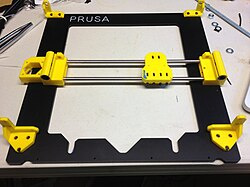
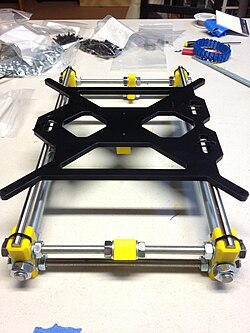
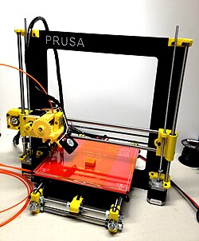
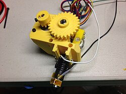
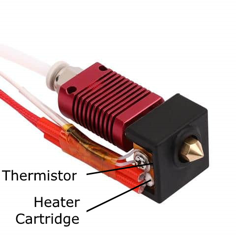
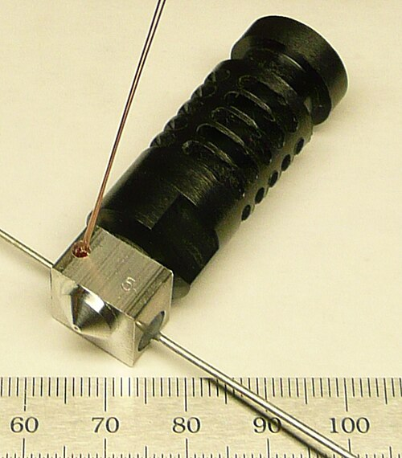
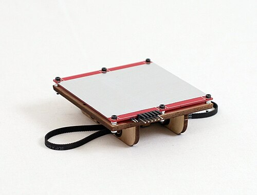
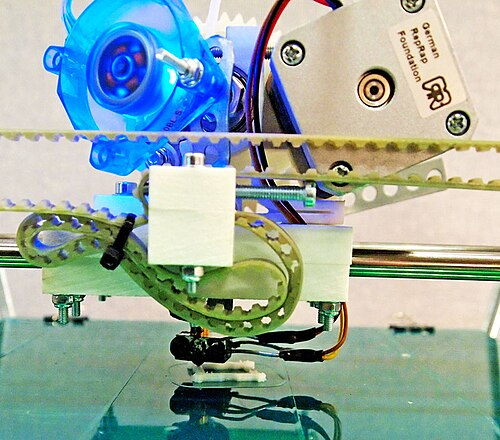
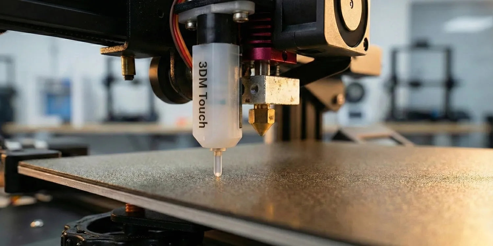

Fundamentos
Partes de una impresora 3D
Antes de tocar perfiles o materiales conviene entender qué piezas componen una impresora 3D y qué función cumple cada una.

Estructura y chasis

Qué es y por qué importa
El chasis es el esqueleto de la impresora. Mantiene alineados los ejes, la cama, el cabezal y los puntos de anclaje. Si flexa, vibra o está mal escuadrado, la boquilla no repite la misma trayectoria y aparecen paredes onduladas, capas irregulares o pérdida de precisión.
En una FDM abierta tipo Bambu A1 también importa la mesa donde está apoyada: una impresora correcta sobre una mesa floja puede imprimir peor que una máquina más simple sobre una base rígida.
- Revisar: tornillos flojos, patas inestables, golpes, crujidos o vibración excesiva.
- Mantenimiento: mantener la máquina nivelada, limpia y sobre una superficie firme.
- Cambiar piezas: solo si hay una pieza estructural doblada, fisurada, rota o con roscas pasadas.
Sistema de movimiento

Qué es y por qué importa
Es el conjunto que desplaza la cama y el cabezal: motores paso a paso, correas, poleas, rodamientos, ruedas, guías lineales, husillos y tensores. Su función es repetir movimientos con precisión, capa tras capa, sin saltos ni holguras.
Cuando el movimiento falla, el problema suele verse en la geometría de la pieza, no en el material: capas desplazadas, ghosting, diagonales raras, círculos ovalados o superficies con vibración repetida.
- Revisar: tensión de correas, suciedad en guías, poleas flojas, cables rozando y ruidos nuevos.
- Mantenimiento: limpiar guías, seguir la lubricación recomendada y no tensar correas “a muerte”.
- Cambiar piezas: correas agrietadas, ruedas planas, rodamientos ásperos, poleas con juego o motores que pierden pasos.
Ejes X, Y y Z

Qué mueve cada eje
La impresora coloca la boquilla mediante coordenadas. En una bedslinger como la Bambu A1, el cabezal se desplaza en X y Z, mientras la cama se mueve en Y. Esto afecta al comportamiento de piezas altas: al moverse la cama, una pieza alta y estrecha puede vibrar más.
Los ejes no son solo direcciones: cada uno tiene su mecánica, sus límites y sus síntomas. Un fallo en Z no se diagnostica igual que un fallo en X/Y.
| Eje | Función | Si falla se nota como |
|---|---|---|
| X | Movimiento lateral del cabezal sobre el carro X. | Ondas laterales, capas corridas, vibración o medidas incorrectas en ancho. |
| Y | Movimiento adelante-atrás de la cama en una A1. | Ghosting, piezas que vibran, pérdida de precisión o desplazamientos bruscos. |
| Z | Altura de capa mediante husillo, varilla roscada o sistema equivalente. | Z-banding, capas aplastadas, separación irregular o marcas periódicas. |
- El carro X debe ir firme, sin juego lateral y unido correctamente a la correa.
- El carro Z sube y baja el conjunto del eje X mediante husillos o guías; si hay holgura, aparecen marcas verticales.
- En CoreXY no hay un “motor Y” simple: los motores trabajan combinados para mover X/Y.
- Cambiar piezas: husillos doblados, tuercas con holgura, correas dañadas o guías con juego real.
Componentes de una cartesiana tipo A1
En una impresora de cama móvil, la placa de construcción se desplaza en Y y el cabezal se mueve en X/Z. Este esquema es útil para entender máquinas como Bambu Lab A1, Ender 3 o Prusa MK4, aunque cada marca cambie detalles de montaje.
| Componente | Función concreta | Qué revisar |
|---|---|---|
| Carro X | Sujeta hotend y, si es direct drive, también el extrusor. | Juego, rodamientos, ruedas, correa y fijación del cabezal. |
| Carro Z | Conecta el eje X con husillos, guías o varillas verticales. | Holgura, paralelismo y movimiento suave al subir/bajar. |
| Correas X/Y | Transmiten el giro del motor a movimientos rápidos. | Tensión elástica, dientes dañados, poleas flojas o desalineadas. |
| Motor paso a paso | Mueve ejes o extrusor en pasos precisos. | Saltos, calentamiento excesivo, ruido nuevo o pérdida de pasos. |
| Varillas, ruedas o raíles | Guían el movimiento para que no haya vibraciones. | Suciedad, grasa seca, rodamientos ásperos o desgaste plano. |
| Fin de carrera / homing | Indica a la impresora dónde está el origen de un eje. | Lecturas falsas, golpes al hacer home o sensor mal alineado. |
Extrusor

Qué es y por qué importa
El extrusor es el sistema que alimenta el filamento. Un motor paso a paso mueve uno o varios engranajes dentados que agarran el filamento y lo empujan hacia el hotend. El hotend funde el material y la boquilla le da forma, pero la regularidad del caudal empieza en el extrusor.
Es una de las piezas más importantes de una FDM porque afecta a calidad, compatibilidad de materiales, velocidad real y fiabilidad. Si alimenta poco, la pieza queda débil; si muerde demasiado, tritura filamento; si la trayectoria no está bien guiada, los flexibles se atascan.
- Componentes clave: motor paso a paso, engranaje impulsor, tensor, rodamiento o segundo engranaje, guía de filamento, hotend y boquilla.
- En extrusores con reducción, el motor trabaja con más ventaja mecánica: más par, menos saltos y E-steps más altos.
- Los sistemas de doble engranaje agarran el filamento por ambos lados y reducen deslizamientos.
- Con filamentos abrasivos conviene usar engranajes y boquillas endurecidas.
Cómo funciona el ciclo de extrusión
1. Alimentación
El motor gira y los engranajes avanzan el filamento. Si hay poca presión, patina; si hay demasiada, lo deforma o lo muele.
2. Fusión
El filamento entra al hotend y se funde a la temperatura del material, por ejemplo alrededor de 200 °C en muchos PLA.
3. Salida por boquilla
El plástico fundido pasa por el orificio de la boquilla y se deposita con ancho de línea controlado por el slicer.
4. Enfriado y unión
El ventilador de capa solidifica el material. Mucho aire mejora PLA, pero puede debilitar ABS, ASA, PC o nylon.
Direct drive vs Bowden
La diferencia está en dónde se coloca el extrusor. En direct drive va montado en el cabezal, muy cerca del hotend. En Bowden va en el chasis y empuja el filamento a través de un tubo PTFE hasta el hotend.
| Tipo | Ventajas | Limitaciones | Uso recomendado |
|---|---|---|---|
| Direct drive | Trayectoria corta, mejor control de retracción, muy bueno para TPU/TPE y flexibles. | Más masa en el cabezal; exige chasis y movimiento robustos si se imprime rápido. | Flexibles, piezas técnicas, perfiles modernos y máquinas tipo Bambu A1. |
| Bowden | Cabezal más ligero, puede reducir ghosting y permitir movimientos rápidos en máquinas simples. | Peor con flexibles, más fricción y retracciones más largas. | PLA, PETG rígido y máquinas donde interesa bajar masa móvil. |
Diseños avanzados de extrusor
Doble engranaje
Dos engranajes sincronizados sujetan mejor el filamento y reducen patinazos en materiales duros, flexibles o de caudal alto.
Reducción u orbital
Usa engranajes compactos para aumentar par sin montar un motor enorme. Ayuda en alta velocidad y materiales difíciles.
Alta temperatura
En sistemas industriales puede combinarse con refrigeración avanzada para materiales como PEEK, PEI o PEKK.
Componentes endurecidos
Necesarios si se imprimen compuestos con fibra de carbono, fibra de vidrio, glow o cargas metálicas.
Problemas típicos del extrusor
| Problema | Causas probables | Solución práctica |
|---|---|---|
| Subextrusión | Boquilla obstruida, agarre insuficiente, temperatura baja, flujo mal calibrado. | Limpiar boquilla, revisar engranajes, subir temperatura con criterio y comprobar flow/E-steps si aplica. |
| Filamento triturado | Tensor excesivo, engranaje sucio, atasco aguas abajo o filamento fuera de diámetro. | Limpiar dientes, ajustar tensión y revisar hotend/boquilla antes de culpar al motor. |
| Stringing | Temperatura alta, material húmedo, retracción insuficiente o ruta Bowden larga. | Secar material, ajustar temperatura y retracción; usar coasting/wipe solo si el slicer lo permite bien. |
Mantenimiento del extrusor
- Limpiar residuos de los engranajes con cepillo pequeño; el polvo de filamento reduce agarre.
- No lubricar la zona que toca el filamento; la grasa en engranajes de tracción puede contaminar y hacer patinar.
- Guardar nylon, PC y materiales higroscópicos en caja seca para evitar burbujas, hilos y alimentación irregular.
- Cambiar engranajes si están redondeados, oxidados, llenos de muescas o ya no agarran aunque la tensión sea correcta.
Hotend

Qué es y por qué importa
El hotend es el conjunto que funde el filamento. Incluye zona fría, disipador, heatbreak, bloque calefactor, cartucho calefactor, termistor y boquilla. Su trabajo es mantener una temperatura estable y convertir el filamento sólido en flujo continuo.
Un hotend inestable provoca problemas difíciles de distinguir: subextrusión, hilos, mala unión entre capas, atascos, blobs o material quemado. Por eso no se debe diagnosticar solo mirando una temperatura en pantalla; importa también el caudal, el ventilador del disipador y el estado interno.
- Revisar: fugas de plástico, calentamiento lento, errores de temperatura, atascos repetidos y ventilador del disipador.
- Mantenimiento: limpiar restos externos en caliente con cuidado, hacer cold pull si procede y no apretar boquillas en frío si el sistema no lo permite.
- Cambiar piezas: heatbreak dañado, termistor inestable, cartucho defectuoso, roscas dañadas o atascos internos imposibles de limpiar.
Boquilla

Qué decide
La boquilla es la salida final del plástico fundido. Define el diámetro de extrusión, el ancho mínimo de línea, el caudal máximo, la altura de capa razonable, el nivel de detalle y parte de la resistencia. Una boquilla gastada puede hacer paredes más anchas, esquinas redondeadas, primeras capas inconsistentes y subextrusión falsa.
En FDM no basta con elegir temperatura: el diámetro y el material de la boquilla determinan qué filamentos puedes usar con fiabilidad. Una boquilla de latón con fibra de carbono, glow o metal puede desgastarse rápido y cambiar el diámetro real sin que lo notes al principio.
Diámetros habituales
| Diámetro | Aplicación | Ventajas | Limitaciones |
|---|---|---|---|
| 0.15-0.3 mm | Miniaturas, texto pequeño, detalles finos. | Capas muy finas y mejor detalle superficial. | Lenta, propensa a atascos y mala con filamentos cargados. |
| 0.4 mm | Uso general con PLA, PETG, ABS, TPU. | Equilibrio entre detalle, velocidad y fiabilidad. | No es la mejor para gran caudal ni para fibras gruesas. |
| 0.6 mm | Piezas funcionales, prototipos rápidos, materiales con fibra. | Más caudal, paredes fuertes y mejor tolerancia a compuestos. | Menos detalle en esquinas pequeñas. |
| 0.8-1.2 mm | Piezas grandes, jarrones, prototipado rápido. | Impresión muy rápida y capas gruesas. | Requiere hotend de alto flujo y pierde detalle fino. |
Materiales de boquilla
| Material | Pros | Contras | Uso lógico |
|---|---|---|---|
| Latón | Barato y muy buena conductividad térmica. | Se desgasta con abrasivos; límite habitual alrededor de 300 °C. | PLA, PETG, ABS, ASA y TPU sin cargas. |
| Acero inoxidable | Más resistente a corrosión y útil en aplicaciones donde se evita latón. | Conduce peor el calor y puede requerir ajustes. | Usos especiales, contacto alimentario con muchas reservas de proceso. |
| Recubierta | Mantiene buen rendimiento térmico y mejora resistencia al desgaste. | Más cara; el recubrimiento puede dañarse con mal uso. | Uso mixto, PETG pegajoso y temperaturas más altas. |
| Acero endurecido | Aguanta fibra de carbono, fibra de vidrio, glow y cargas. | Conduce peor; suele pedir 5-15 °C más. | Compuestos abrasivos y boquillas de batalla. |
| Rubí | Resistencia extrema al desgaste en la punta. | Cara y frágil ante golpes contra la cama. | Abrasivos cuando se busca mucha vida útil. |
| Carburo de tungsteno | Muy dura, buena conductividad y alta durabilidad. | Cara. | Uso intensivo con abrasivos y alta exigencia. |
Mantenimiento de boquillas
Cold pull
Útil para arrastrar residuos internos. Se hace calentando, introduciendo material de limpieza o nylon y retirándolo al enfriar parcialmente.
Aguja
Sirve para atascos parciales, siempre con cuidado y usando diámetro correcto. No arregla desgaste del orificio.
Disolventes
La acetona puede ayudar con ABS fuera de la máquina, pero no es solución universal para PLA, PETG o nylon.
Prevención
Filamento seco, boquilla correcta para abrasivos y limpieza externa evitan muchos atascos.
Cuándo cambiar la boquilla
- Cada 3-6 meses en latón si imprimes mucho; antes si usas materiales abrasivos.
- Cuando el orificio está agrandado, ovalado o deja líneas inconsistentes pese a limpiar.
- Si hay atascos persistentes, subextrusión repetida o el filamento sale torcido al purgar.
- Si cambias a fibra de carbono, glow, madera, metal o vidrio: monta una endurecida antes de gastar la de latón.
Problemas comunes de boquilla
| Problema | Causa probable | Solución |
|---|---|---|
| Subextrusión | Atasco, temperatura baja, boquilla desgastada o caudal excesivo. | Cold pull, subir temperatura con criterio, bajar velocidad o cambiar boquilla. |
| Stringing | Temperatura alta, retracción pobre, humedad o material muy fluido. | Ajustar temperatura/retracción y secar filamento. |
| Capas inconsistentes | Atasco parcial, filamento húmedo o flujo irregular. | Limpieza, secado, revisar extrusor y comprobar diámetro real. |
Innovaciones útiles
- Boquillas de alto flujo tipo CHT o geometrías internas divididas aumentan la fusión disponible para imprimir más rápido.
- Hotends de alto flujo permiten boquillas grandes sin que el material salga frío por dentro.
- Boquillas listas para compuestos priorizan resistencia al desgaste frente a precio.
Cama y bases de impresión

Qué es y por qué importa
La cama es la superficie donde se pega la primera capa. Puede ser una base caliente con placa flexible, vidrio, PEI, PEX, G10/FR4, polipropileno, fibra de carbono o recubrimientos específicos. Su función es sujetar la pieza mientras imprime y permitir retirarla sin romper la pieza ni la superficie.
La primera capa depende de cuatro factores: limpieza, temperatura, distancia boquilla-cama y compatibilidad entre material y superficie. Una buena placa no compensa grasa de dedos, altura inicial incorrecta o material que necesita cámara cerrada.
- Revisar: grasa, restos de adhesivo, zonas brillantes, arañazos, placa mal colocada y temperatura real.
- Mantenimiento: limpiar con agua y jabón si pierde agarre, evitar tocar la zona útil y usar adhesivo como interfaz cuando convenga.
- Cambiar piezas: recubrimiento arrancado, placa deformada, imán dañado o pérdida de adhesión incluso estando limpia.
Tipos de placas de construcción
| Base | Ventajas | Desventajas | Mejor para |
|---|---|---|---|
| Vidrio | Base plana, acabado inferior liso y buena estabilidad térmica. | Frágil, pesada y a menudo necesita adhesivo. | PLA, PETG con interfaz y piezas estéticas. |
| PEI liso/texturizado | Muy versátil, buena adhesión y fácil uso en placas flexibles. | PETG puede pegar demasiado; requiere limpieza frecuente. | PLA, ABS, ASA, TPU y uso general. |
| PEX | Buena durabilidad y resistencia a temperaturas altas. | Más caro y a veces necesita adhesivo. | PETG, ABS, ASA y usuarios que priorizan vida útil. |
| PC / polipropileno | Flexible, barato y tolerante en materiales de baja temperatura. | No soporta bien camas muy calientes y se raya/deforma. | PLA, TPU y prototipado simple. |
| G10 / FR4 | Muy bueno para nylon, PETG, TPU y compuestos; resistente. | Acabado mate, menos estético que vidrio o PEI liso. | Nylon, piezas funcionales y materiales técnicos. |
| Fibra de carbono | Rígida, ligera y con buena distribución térmica. | Cara y a menudo requiere recubrimiento o adhesivo. | Aplicaciones técnicas y alta temperatura. |
| Acrílico | Barato y ligero. | Se deforma con calor y adhiere peor. | Uso antiguo o impresoras muy básicas. |
Compatibilidad rápida placa-material
| Material | Placa recomendada | Ayuda de adhesión | Precaución |
|---|---|---|---|
| PLA | PEI o vidrio. | Ninguna o barra de pegamento si hace falta. | No aplastar demasiado la primera capa. |
| PETG | PEX o PEI texturizado. | Barra de pegamento como capa separadora. | Puede arrancar PEI liso si pega demasiado. |
| TPU | PEI, PC o G10. | Normalmente poca o ninguna. | Puede adherir fuerte; retirar con paciencia. |
| ABS/ASA | PEI o PEX. | Adhesivo compatible y cámara/cerramiento. | Warping si hay corrientes de aire. |
| Nylon | G10/FR4 o PEI preparado. | Barra de pegamento y material seco. | Humedad y contracción. |
| PC | PEI/PEX de alta temperatura. | Adhesivo de alta temperatura. | Requiere cama caliente y entorno estable. |
Innovaciones actuales en bases
- Placas magnéticas flexibles: permiten retirar piezas doblando la lámina, reduciendo golpes a la cama.
- Doble superficie: una cara lisa para acabado brillante y otra texturizada para agarre o estética mate.
- Recubrimientos técnicos: PEX, PEI avanzado, G10 o superficies para materiales de ingeniería.
- Placas de alta temperatura: pensadas para flujos con ASA, PC, nylon o polímeros avanzados.
Ventiladores

No todos hacen lo mismo
Hay ventiladores de capa, de hotend, de electrónica y de fuente. El de capa enfría el plástico recién depositado. El de hotend enfría la zona fría para evitar que el calor suba por el filamento. El de electrónica protege placa y drivers.
Es una pieza pequeña pero crítica: un ventilador de capa mal configurado puede arruinar puentes y voladizos; un ventilador de hotend fallando puede provocar heat creep y atascos aunque la boquilla esté limpia.
- Revisar: aspas sucias, ruido de rodamiento, ventilador que arranca tarde, cables tocando aspas y conductos obstruidos.
- Mantenimiento: limpiar polvo y hebras de plástico, comprobar que gira libre y no soplar aire comprimido haciendo girar las aspas sin control.
- Cambiar piezas: ruido permanente, paradas intermitentes, aspas rotas, ventilador sin fuerza o errores térmicos asociados.
Electrónica y alimentación

Qué controla
La electrónica coordina motores, calentadores, sensores, ventiladores, pantalla, comunicaciones y seguridad térmica. La fuente de alimentación entrega energía a la cama, al hotend y al resto del sistema. El firmware interpreta el G-code y decide cómo ejecutar movimientos y temperaturas.
No es una zona para improvisar. Un fallo eléctrico puede ser solo un error de impresión, pero también puede ser un problema de seguridad si hay conectores flojos, cables dañados o calentadores mal sujetos.
- Revisar: conectores quemados, cables pelados, olor extraño, reinicios, errores de temperatura y ventilación de placa.
- Mantenimiento: mantener polvo fuera, no tirar de conectores por el cable y revisar visualmente después de transportes o golpes.
- Cambiar piezas: placa con componentes quemados, fuente inestable, conectores fundidos, termistor errático o drivers que fallan repetidamente.
Sensores habituales

Qué miden
Los sensores ayudan a la impresora a saber qué está pasando: altura de cama, presencia de filamento, temperatura, vibración o fin de carrera. Reducen errores, pero no sustituyen limpieza, mantenimiento ni un perfil correcto.
En impresoras modernas como la A1, el autonivelado facilita mucho la primera capa, pero no hace milagros: una placa con grasa, un nozzle sucio o una cama mal colocada siguen dando problemas.
Autonivelado
Mide la cama y compensa pequeñas variaciones. Cambiar si da lecturas inconsistentes o falla la detección.
Fin de filamento
Detecta ausencia de material. Revisar si marca falso positivo o no pausa cuando se acaba la bobina.
Termistor
Lee temperatura del hotend o cama. Cambiar si hay saltos raros, errores térmicos o lecturas imposibles.
Acelerómetro
Ayuda con vibraciones e input shaping. No se cambia salvo fallo electrónico o lecturas incorrectas.
Cómo diagnosticar usando las partes
Cuando una impresión falla, localiza primero el subsistema: adhesión, movimiento, extrusión, temperatura, refrigeración o software. Así evitas cambiar diez ajustes a la vez.
| Síntoma | Parte probable | Primera revisión |
|---|---|---|
| Se despega | Cama / primera capa | Limpieza, temperatura, altura inicial. |
| Sale débil | Extrusor / hotend / temperatura | Caudal, atasco parcial, temperatura y ventilación. |
| Capas desplazadas | Movimiento | Correas, poleas, golpes, pérdida de pasos. |
| Tiene hilos | Hotend / retracción / material | Temperatura, humedad, retracción y velocidad. |
| Ondas en paredes | Chasis / movimiento | Vibración, mesa, aceleración y correas. |